The Quiet Art Of Snowshoeing
A guide to this relaxing winter activity, including exercise, snowshoe styles, forms and function, technique, clothing and accessories.
By David Petersen
November/December 1986
As a child, I had a favorite escapist fantasy: passing a winter holed up in a rustic, high-country cabin. In this dream I smiled a lot, at peace in my solitude, warmed inside and out by a winking wood fire while a friendly wall of white mounted deep beyond the door. Today I live that dream, sort of, in a board-and-batten aerie perched at 8,000 feet on a steep mountain slope.
My little redoubt is connected to the blacktop two-lane down in the valley by a series of rutted but passable dirt roads, and thus is far less secluded than I would like during the summer months. But the place gets remote real quick when the autumn snows begin to fall, chasing my few summer neighbors down to greener winter pastures and sealing the road behind them. (Here on the Western Slope of the Rockies, we measure snowfall in feet rather than inches.) From November until late April, the steep, twisting drive up to my place is no more than a line of white through the forest, upon which even the most brutish 4 x 4s fear to tread.
Romantic, yes-but romance has a way of fading with familiarity. Not only must I snowshoe down to the nearest cleared road each time I want to go anyplace on wheels during winter, but I must also haul in provisions and haul out all nonburnable garbage. Without snowshoes, I wouldn't be able to live as I do.
Ski down? I tried that my first winter here. I fell a lot. And for the trip back up I had to tote my skis plus everything else... on snowshoes. I soon discovered that while cross-country skis are the sports cars of muscle-powered winter travel, snowshoes are the 4 x 4s, the tractors, the ATV's-less than graceful in form and function, yet graced with ruggedly functional form. That's why they've been around so long and are still going strong today.
The earliest specialized snow-going footwear was probably crafted around 6,000 years ago in Central Asia-a solid wood platform with a crude binding that was neither snowshoe nor ski, but a primitive forerunner of both. In the millenia following, Eurasia tribes spreading west to settle what is now Scandinavia stretched the original design into an early version of the Nordic (cross-country) ski-while those who eventually moved east across the Bering Land Bridge to North America refined the webbed conveyance we know today as the snowshoe.
Today, however, we also have access to speedy crosscountry skis and even speedier snowmobiles for wintertime off-road travel. Why, then, is the snowshoe gaining steadily in popularity rather than falling into obsolescence? The answer is practicality. The snowshoe is every bit as practical a tool today as it was 6,000 years ago.
How so? Only those who have never danced to the poetic cadence of the Nordic kick-and-glide would argue that tromping around on snowshoes is more exhilarating than gliding along on skis. But there are some types of snow across which skis refuse to glide (or go at all) and many types of terrain that skis can't negotiate (up steep hills for one example; over heavily timbered, rocky, or brushy country for others).
And while snowmobiles can be useful tools for ranchers and other rural working folk, and have become popular toys for those who prefer to take their outdoor recreation sitting down, they are also expensive, demand a truck or trailer for transport, and-being fairly complicated machines-can break down just when you need them most.
Consequently, rather than forcing the snowshoe into a museum case, snowmobiles and skis have created a new niche for the ancient conveyance; savvy backcountry skiers and snowmobilers often tote along a pair of 'shoes for walk-out insurance against the possibility that their speedier and more glamorous forms of snow locomotion will let them down.
But snowshoes are more than merely practical; they can also be fun, especially for novice snow recreationists. In fact, one of the primary attractions of recreational snowshoeing is the ease with which the sport can be mastered-if you can walk, you can 'shoe. Another plus for snowshoeing is its democratic nature: While crosscountry ski outings, for all but the highly skilled and fiercely determined, are restricted to dry snow on relatively flat and open terrain, 'shoeing can be enjoyed on all but nearly vertical landscapes, in darn near any type of snow.
A Question of Style . . . and Some Answers
A first-time snowshoe shopper might well be dazed by the variety of designs available and further confused by the fact that any one style is apt to wear different names in different regions. Which style 'shoe is best for you? Take your pick.
Alaskan: Also known as the Yukon, the pickerel, and, in its smaller sizes, the trail, this is the longest and narrowest commercial model extant, featuring a rounded, markedly upturned toe and a long, sharp tail. Designed for flat, open country and deep, soft snow, the Alaskan has a length and surface area that make it hard to beat for flotation. Additional advantages include the raised toe, which resists plowing under soft snow (especially troublesome when descending a hill), and the long, trailing tail, which provides superb tracking (straight-ahead alignment).
But, because of its generous length (10" X 56" is recommended for loads of up to 175 pounds), the Alaskan has about as much quick-turn maneuverability as a dog sled, is tiring to haul any great distance, and is unsuited to travel in thick woods or over rugged mountain terrain.
Maine: The Maine is generally paired with the almost identical Michigan, and also travels under the tags of Algonquin, Huron, and-a catchall term -beavertail. The classic teardrop-shaped 'shoe, the Maine is shorter and wider (13" X 48" for up to 175 pounds) than the Alaskan. But like the Alaskan, the Maine is a taildragging, straight-tracking, deep-snow, open-country, flatland 'shoe. However, the Maine's lower toe rise makes it more suitable for climbing (the toe can be kicked into a slope with each step for traction), and its shorter length makes it more maneuverable-though less so than the even more compact bearpaw and its progeny.
Standard bearpaw: This old-timer is short, broad (14" X 30" for up to 175 pounds), and rounded both front and rear, with no or only a slight toe rise. The oval-shaped bearpaw was designed for travel over rocky, brushy, or heavily forested terrain where frequent turns are required. The low toe is excellent for kick-stepping up steep hills-but not so great for going down the other side, where it will try to plow under with each step. Additionally, the bearpaw's extreme width necessitates spread-legged walking and induces lateral tipsiness when traversing slopes, while the stubby heel provides poor tracking.
Modified bearpaw: Longer and narrower than the standard bearpaw (10" X 36" for up to 200 pounds), with a little more upturn at the toe and a longer heel, the modified bearpaw-also called the Green Mountain or otter-has its predecessor's strengths of compactness and maneuverability, but tracks better, allows for a more natural stride, and is less prone to tipping downslope when traversing sidehills. A very popular 'shoe.
Western: This space-age modified bearpaw sports all the features we've come to expect from modern technology. Functionally, the western outshines all other designs in just about every category . . . weight-tosize, weight-to-strength, and flotation-to-size ratios; maneuverability; traction; tracking; and low-maintenance dependability. The western, if properly sized for load and snow conditions, can be as functional on the open flats of the Far North or in the dense hardwood forests of the East as it is in the rocky, mountainous country of its namesake West.
Most westerns employ tubular or I-beam aluminum frames, sophisticated bindings, built-in crampons, and solid synthetic decking (in lieu of the traditional rawhide webbing).
Disadvantages? A couple: 1) cost-even the smallest westerns will set you back around $125 for 'shoes and bindings, while some larger, fancier rigs sell for well over $200; and 2) aesthetics- you don't often see a pair of aluminum-and-neoprene snowshoes decorating a cabin wall. Just the same, most serious 'shoers agree that the western is the toughest, most functional, and most versatile design around. [EDITOR'S NOTE:For a look at two leading western models, peruse the accompanying sidebar.]
To boil style selection to its basics, the Alaskan and Maine models are best suited for use in the regions from which they take their names, while modified bearpaws are a good bet in the West. If properly sized for load and snow conditions, the western is a superb performer anywhere.
As a sizing rule, go with the smallest 'shoe that will support your weight plus any load you normally tote along on winter outings. (Many manufacturers attach a sizing chart to each pair of their 'shoes, or at least make one available to each of their retailers. Check the charts before you buy.)
Form and Function
No matter the style or materials from which they're fashioned, all snowshoes share certain design features. In traditional models, the frame is constructed of strong, flexible, lightweight wood-white ash is preferred-which is softened by steaming and bent to shape on a mold. Two crossbars-one forward and one aft of the foot position-strengthen the frame, serve as interior lacing supports, and aid traction. The master, or toe, cord consists of several strands of wrapped lacing that span the frame a few inches behind the front crossbar-not only strengthening the frame and acting as an interior lacing support, but also serving as the mounting and pivot point for the boot binding. The open rectangle between the master cord and the front crossbar, called the toe hole, allows space for the tip of your boot to pivot down below the level of the 'shoe with each step.
Finally, the lacing, or webbing, strengthens the 'shoe and provides both flotation and traction. The earliest form of lacing probably consisted of a wickerwork of interwoven branches. Eventually, rawhide came into use and has been the preferred lacing material since. But rawhide has certain disadvantages. Most significantly, it stretches when wet, allowing the webbing to sag and wear; on frozen snow, rawhide lacing is superb, but expose it to slush and you've got potential problems. Additionally, sundry gnawing critters like nothing better than a good rawhide chew, making suspension or wallhanging the only safe methods of 'shoe storage. Both of these problems can be somewhat ameliorated by painting rawhide-laced wooden 'shoes (both frames and webbing) with spar varnish or marine epoxy.
Superior to rawhide for lacing are synthetics such as nylon, polyurethane, and neoprene nylon. All have great strength, won't stretch when wet, and are unappetizing to rodents. Many manufacturers now offer their wooden 'shoes with a choice of rawhide or synthetic lacing. If you're a traditionalist and do most of your snowshoeing on dry (frozen) snow, you'll probably be happiest with rawhide. Pragmatists and slush-'shoers, on the other hand, will appreciate the durability of the synthetics (neoprene nylon is one of the toughest and most near-natural in appearance).
The Ties That Bind
Bindings are the arrangements of straps, pads, and buckles that link 'shoes to boots. As with snowshoes themselves, there's a wide assortment of binding designs, some of which are known by more than one name. Here are four of the most common:
The H binding, sometimes called the commercial binding, is among the simplest and most common of binding designs, consisting of a heel strap, an over-the-instep strap, and a padded, double-strap toepiece. After slipping your boot into the binding, you tighten the straps with belt-buckle-type metal fasteners. The advantages of the H are its economy and its simplicity (anyone minimally skilled with knife and punch can make up or repair a pair in an emergency).
But while it's a workable design for easygoing flatland 'shoeing, the H isn't enough binding for deep snow and rugged country. Even when the straps are cinched down to the point of discomfort, a minimal amount of downhill going will force the foot forward, loosening the heel strap and allowing the boot to slip forward and jam into the front crossbar-or, worse yet, pull out of the binding in midstep (what a thrill!). Also, the H offers only minimal lateral support, providing poor tracking. And finally, the H's small buckles require bare hands to manipulate and are anything but pleasant to struggle with when encrusted with snow-which they invariably are.
The improved H binding is an H with an elongated toepiece that wraps down over the front of the boot to limit forward slippage. Unfortunately-though the probability is reduced significantly-slipped bindings can still occur in rough going, and the problems of poor tracking and finger-numbing buckles remain. Still, the improved H is a popular binding for use with lightweight wooden 'shoes.
The K binding has heel and over-the-instep straps, and a toepiece consisting of wings that wrap up either side of the boot's toe and lace together at the top. The lace-up toepiece is somewhat more comfortable when cinched tight than are the toepieces of the H and improved H models, though it has no provision for keeping the foot from sliding forward. In the final reckoning, the K is little if any improvement over the H.
ARMCHAIR SNOWSHOEING
If you'd like to do a bit more reading and research before you take the snowshoe leap, check your local library or bookshop for either of these two excellent reference volumes:

The Snowshoe Book, by William Osgood and Leslie Hurley ($8.95 in paperback from the Stephen Greene Press, P.O. Box 1000, Brattleboro, VT 05301), is just what its subtitle implies: "A Complete Guide to How, Why, When, and Where." The "where," however, is heavily oriented toward Canada and the northeastern United States, making this book an especially good bet for eastern snowshoe enthusiasts, but of somewhat less value to westerners.

Snowshoeing, by Gene Prater ($7.95 in paperback from The Mountaineers Books, 306 2nd Ave. W., Seattle, WA 98119), is well written and highly informative. The author hails from Washington State and was one of the developers of the western-style 'shoe, so-though any would-be snowshoe tripper can benefit from Prater's book-his observations hold special interest for westerners.
The western binding, like the 'shoe to which it belongs, can vary widely in design and construction materials. Features shared by most include a rigid boot plate-mounted to the frame with a metal hinge pin-to which the flexible upper portions of the binding are fastened. The hinging arrangement allows the foot to pivot up and down in a natural walking motion, while simultaneously providing rigid lateral stability and superb tracking.
The western binding employs a wide nylon heel strap and a K-type, double-wing toepiece (generally of neoprene nylon) that laces at the top with nylon straps passed through D-rings or around speed laces. The whole works is secured by two spring-type fasteners.
In my experience, western bindings beat the socks off all traditional designs, few of which are totally satisfactory in all situations. Westerns are the most comfortable, are the quickest and easiest to get a boot into and out of (after initial adjustments you rarely even have to remove mittens or gloves), allow for the most natural gait, provide the best tracking, and-if secured properly-eliminate the problem of slippage.
Because of the importance of a secure boot-to-'shoe bond, you should give as much attention to selecting bindings as you do to choosing snowshoes. If you can't find a satisfactory binding at your local sporting goods outlet, check the catalogs of snowshoe manufacturers and mail-order outdoor equipment suppliers for western-type bindings that can be fitted to nonwestern snowshoes. (Vermont Tubbs's Super A is an excellent example of this class of modern universal bindings.)
Traction Devices
Most western-style aluminum 'shoes come with traction devices permanently attached to their undersides. Traditional wooden models, however, depend on their webbing and crossbars to supply traction-which is generally adequate save for steep as cents on hard-packed snow or ice. For additional traction, you can purchase accessory crampons through many mail-order suppliers and some sporting goods stores or resort to the old sourdough trick of wrapping small-diameter chain, cable, or rope around your 'shoe frames.
Clothing and Accessories
I won't tell you how to clothe yourself for a snowshoe outing, other than to applaud wool and the layering principle. For footwear, I've found the practical choices to be three: insulated leather boots treated with water repellent, rubber snow pacs, or synthetic "snowmobile" boots. Snowmobile boots are the least expensive, are insulated with removable felt liners, and are satisfactory for short, easy outings. Top-quality rubber snow pacs (of the Sorrel variety) have higher tops and thicker felt liners. They're generally warmer, more comfortable, more durable, a little heavier, and two to three times more expensive than snowmobile boots. My personal favorites are insulated leather boots worn over two pairs of socks. Leather boots are lighter than either pacs or snowmobile boots, less bulky, and more comfortable when bindings are cinched down tight.
Whatever footgear you choose, seal the openings between boot tops and pant legs with nylon gaiters. (Look for Velcro-type closures rather than zippers, which tend to clog with snow.) And finally, a ski pole is handy for balance and to help erect yourself after a tumble.
A (Very) Few Words on Technique
Earlier, I asserted that if you can walk, you can snowshoe. That's not to imply that snowshoeing is as effortless as walking. It can be, almost, with smaller 'shoes and good bindings (longer 'shoes require a bit of paddling around to make sharp turns, while wider models necessitate taking exaggerated steps to keep from placing one 'shoe down atop the other). In general, just take it easy at first, watch your feet until you get the feel, and use a ski pole for balance. In a few minutes you'll have the hang of straight and level travel . . . at which time you can move on to mastering turns, as cents and des cents, kick-steps and sidehill traverses, and negotiating obstacles such as fences and downed logs.
The Economics of Snowshoeing
As any master craftsman in just about any trade will verify, the most satisfactory and economical tool in the long run is rarely the least expensive to purchase. So it is with snowshoes. For light recreational duty, you can have fun on a low-budget pair of bearpaws or beavertails with commercial bindings. But if you plan to work your snowshoes hard and often, you'll do better to shop for quality rather than economy.
One way to save money without relinquishing quality is to buy a kit and assemble it yourself (Vermont Tubbs and other manufacturers offer high-quality kits at considerable discount). Another money saver (and the way I acquire all of my 'shoes) is to watch pawn shops, flea markets, and garage sales for bargains in slightly used snowshoes and bindings.
Making Tracks in the White Direction
The invention of the progenitor of the snowshoe some 6,000 years ago represented, in the truest sense of the expression, a giant step for mankind, allowing travel to, and habitation in, areas otherwise out of bounds for small-footed mammals such as we. Today, even in the face of competition both racy and raucous, the humble snowshoe-while neither fast nor glamorous-remains the most practical, economical, and democratic mode of snow locomotion around, capable of transporting adventuresome winter wanderers into the very heart of whiteness. And back out again.
WESTERN SHOE-TOUT
The all-around most useful and dependable snowshoe design is a high-tech style called the western. The most commercially successful westerns are the Sherpa Snow-claw and the Vermont Tubbs Snow Spyder. (The photo shows two examples of each, flanking a wooden modified bearpaw.)
Sherpa Snow-claws (two 'shoes on left) are available in four sizes, with three styles of bindings. The frame is tough, lightweight, gold-anodized, aircraft aluminum tubing, to which is laced a solid (as opposed to webbed) neoprene flotation deck. With each step, the sawtoothed crampon attached to the under-toe of the binding platform pivots down to bite the snow, facilitating sure-footed traction even on hardpack as cents. Sherpa is the market leader.
Vermont Tubbs Snow Spyders (two 'shoes on right) come in two sizes, with aircraft aluminum frames-but of I-beam construction rather than tubing. The I-beam's design provides tremendous strength, while its sharp angles enhance edge control. The flotation deck consists of solid Hypalon pads at toe and heel, and a midsection webbed with Hytrel-coated cable. The bottom side of the frame is equipped with a large, stationary (as opposed to pivoting) stainless steel crampon.
Snow Spyders are sold with the buyer's choice of a three-pin cross-country ski binding or what Tubbs calls its Super A. The Super A is similar to the Sherpa binding in that it employs a nylon heel strap and lacings, metal spring fasteners, and a double-wing, K-type, neoprene toepiece mounted to a rigid boot plate.
By comparison, the Sherpa is a bit lighter than the equivalent-sized Snow Spyder-but costs a bit more, too. The Sherpa's rotary-claw crampon pro vides superb traction on level terrain and for as cents-but requires walking on tiptoes when negotiating steep declines to prevent skiing on the solid decking. Conversely, the larger Tubbs crampon doesn't pivot, making for sure-footed des cents (no skiing)-but induces a slight drag on level ground and during as cents. Construction and binding quality of the two brands are roughly equivalent-meaning excellent-as are maneuverability and ruggedness. Both have been used (and subsequently praised) for the approach portions of major mountaineering expeditions.
To find out more about these 'shoes, write for the free brochures offered by both companies, examine and compare prices and features, and-if possible-rent a pair of each (as well as other styles and brands) for a trial walk before buying.
Write to Sherpa Outdoor Products, Inc., 2222 Diversey, Chicago, IL 60647 . . . and to Vermont Tubbs, Inc., Forestdale, VT 05745.
|
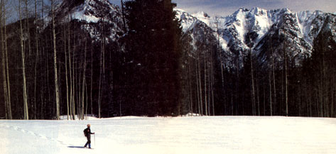 The Snowshoe Book, by William Osgood and Leslie Hurley ($8.95 in paperback from the Stephen Greene Press, P.O. Box 1000, Brattleboro, VT 05301), is just what its subtitle implies: ""A Complete Guide to How, Why, When, and Where."" The ""where,"" however, is heavily oriented toward Canada and the northeastern United States, making this book an especially good bet for eastern snowshoe enthusiasts, but of somewhat less value to westerners. |
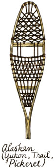 Snowshoeing, by Gene Prater ($7.95 in paperback from The Mountaineers Books, 306 2nd Ave. W., Seattle, WA 98119), is well written and highly informative. The author hails from Washington State and was one of the developers of the western-style 'shoe, so?though any would -be snowshoe tripper can benefit from Prater's book?his observations hold special interest for westerners. |
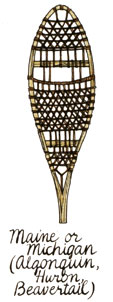 |
|
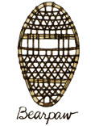 |
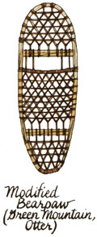 |
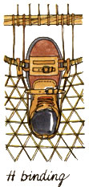 |
|
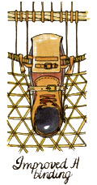 |
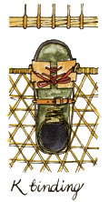 |
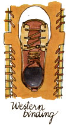 |
|
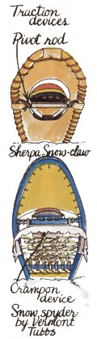 |
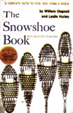 |
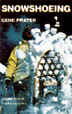 |
|
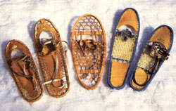 |
|
|